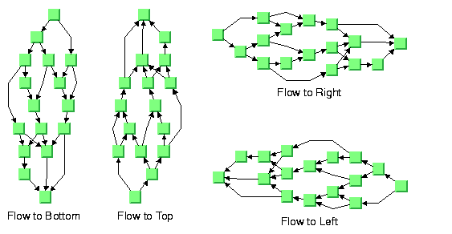
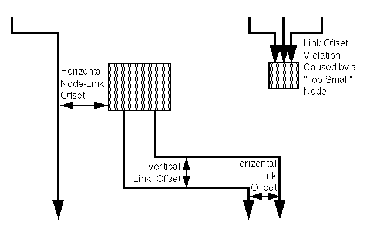

Flow direction (HL)
The flow direction parameter specifies the direction
in which the majority of the links should point. If the flow direction
is to the top or to the bottom, the node levels are oriented horizontally
and the links mostly vertically. If the flow direction is to the left
or to the right, the node levels are oriented vertically and the links
mostly horizontally.
If the flow direction is to the bottom, the nodes of
the level with index 0 are placed at the top border of the drawing.
The nodes with level index 0 are usually the root nodes of the drawing
(that is, the nodes without incoming links). If the flow direction
is to the top, the nodes with level index 0 are placed at the bottom
border of the drawing. If the flow direction is to the right, the
nodes are placed at the left border of the drawing.

Flow directions
To specify the flow direction towards the bottom:
The valid values for the flow direction are:
IlvDirection.Right(the default)IlvDirection.LeftIlvDirection.BottomIlvDirection.Top
Leveling strategy (HL)
The layout algorithm partitions the nodes into levels
(see A brief description of the HL algorithm). The leveling
strategy specifies how the levels are calculated. Besides the leveling
strategy, layout constraints (see Layout constraints for HL), level indices
(see For experts: more indices (HL)) as well
as the incremental mode (see Incremental mode with HL) also affect
the way the levels are calculated. If the incremental mode is disabled,
the leveling strategy determines the levels of all nodes that are
not subject to layout constraints and level index specifications.
Leveling strategies
To specify the leveling strategy:
The valid values for the leveling strategy are:
IlvHierarchicalLayout.SEMI_OPTIMAL(the default)This produces often the same result as the optimal strategy, but it is quicker. The layout algorithm uses a heuristic to minimize the sum of level distances for all edges. It pulls root nodes to the highest-numbered possible level and leaf nodes to the lowest-numbered possible level.IlvHierarchicalLayout.OPTIMALThis uses an algorithm that minimizes the sum of level distances for all edges. The optimal strategy is slower than the other strategies, but often produces the best result.IlvHierarchicalLayout.HIGHER_LEVELSNodes have a tendency to use the possible level with the highest level number. All leaf nodes will be at the higest-numbered level. All root nodes are pulled to high-numbered levels as much as possible.IlvHierarchicalLayout.LOWER_LEVELSNodes have a tendency to use the possible level with the lowest level number. All root nodes will be at level 0. All leaf nodes are pulled to low-numbered levels as much as possible.IlvHierarchicalLayout.SPREAD_OUTThis is a combination of the lower-level and higher-level strategies. All root nodes will be at level 0. All leaf nodes will be at the higest-numbered level. All inner nodes are at balanced positions.
Level justification (HL)
If the layout uses horizontal levels, the nodes of the
same level are placed approximately at the same y-coordinate. The
nodes can be justified, depending on whether the top border, or the
bottom border, or the center of all nodes of the same level should
have the same y-coordinate.
If the layout uses vertical levels, the nodes of the
same level are placed approximately at the same x-coordinate. In this
case, the nodes can be justified to be aligned at the left border,
at the right border, or at the center of the nodes that belong to
the same level.
To specify the level justification towards the top:
If the flow direction is to the top or to the bottom,
the valid values for the level justification are:
IlvDirection.TopIlvDirection.BottomIlvDirection.Center(the default)
Level justification for horizontal levels
If the flow direction is to the left or to the right,
the valid values for the level justification are:
IlvDirection.LeftIlvDirection.RightIlvDirection.Center(the default)
Level justification for vertical levels
Link style (HL)
The layout algorithm positions the nodes and routes the
links. To avoid overlapping nodes and links, it creates bend points
for the shapes of links. The link style parameter controls the position
and number of bend points. The link style can be set globally, in
which case all links have the same kind of shape, or locally on each
link such that different link shapes occur in the same drawing.
Link styles
Global link style
To set the global link style:
The valid values for the link style are:
IlvHierarchicalLayout.POLYLINE_STYLEAll links get a polyline shape. A polyline shape consists of a sequence of line segments that are connected at bend points. The line segments can be turned into any direction. This is the default value.IlvHierarchicalLayout.ORTHOGONAL_STYLEAll links get an orthogonal shape. An orthogonal shape consists of orthogonal line segments that are connected at bend points. An orthogonal shape is a polyline shape where the segments can be turned only in directions of 0, 90, 180 or 270 degrees.IlvHierarchicalLayout.STRAIGHT_LINE_STYLEAll links get a straight-line shape. All intermediate bend points (if any) are removed. This often causes overlapping nodes and links.IlvHierarchicalLayout.NO_RESHAPE_STYLENone of the links is reshaped in any manner. Note, however, that unlike fixed links, the links are not ignored completely. They are still used to calculate the leveling.IlvHierarchicalLayout.MIXED_STYLEEach link can have a different link style. The style of each individual link can be set such that different link shapes can occur in the same graph.
Individual link style
All links have the same style of shape unless the global
link style is
MIXED_STYLE. Only when the
global link style is MIXED_STYLE can each
link have an individual link style. Different link styles mixed in the same drawing
To specify the style of an individual link:
The valid values for the link style of local links are
the same as for the global link style:
IlvHierarchicalLayout.POLYLINE_STYLEIlvHierarchicalLayout.ORTHOGONAL_STYLEIlvHierarchicalLayout.STRAIGHT_LINE_STYLEIlvHierarchicalLayout.NO_RESHAPE_STYLE
Connector style (HL)
The layout algorithm positions the end points of links
(the connector pins) at the nodes automatically. The connector style
parameter specifies how these end points are calculated.
Connector styles
To specify the connector style:
The valid values for
style are: IlvHierarchicalLayout.CENTERED_PINSThe end points of the links are placed in the center of the border where the links are attached. This option is well-suited for polyline links and straight-line links. It is less well-suited for orthogonal links, because orthogonal links can look ambiguous in this style.IlvHierarchicalLayout.CLIPPED_PINSEach link pointing to the center of the node is clipped at the node border. The connector pins are placed at the points on the border where the links are clipped. This option is particularly well-suited for polyline links without port specifications. It should not be used if a port side for any link is specified.IlvHierarchicalLayout.EVENLY_SPACED_PINSThe connector pins are evenly distributed along the node border. This style guarantees that the end points of the links do not overlap. This is the best style for orthogonal links and works well for other link styles.IlvHierarchicalLayout.AUTOMATIC_PINSThe connector style is selected automatically depending on the link style. If any of the links has an orthogonal style or if any of the links has a port side specification, the algorithm chooses evenly spaced connectors. If all the links are straight, it chooses centered connectors. Otherwise, it chooses clipped connectors.
End point mode (HL)
The layout algorithm provides two end point modes. You
can set the end point mode globally, in which case all end points
have the same mode, or locally on each link, in which case different
end point modes occur in the same drawing.
Global end point mode
To set the global end point mode:
The valid values for
mode are:
IlvLinkLayout.FREE_MODE(the default)The layout is free to choose the appropriate position of the connection point on the origin/destination node.IlvLinkLayout.FIXED_MODEThe layout must keep the current position of the connection point on the origin/destination node.IlvLinkLayout.MIXED_MODEEach link can have a different end point mode.
Individual end point mode
All links have the same end point mode unless the global
end point mode is
IlvLinkLayout.MIXED_MODE. Only when the global end point mode is set to MIXED_MODE can each link have an individual end point mode. To set the end point mode of an individual link:
The valid values for
mode are: IlvLinkLayout.FREE_MODE(the default)IlvLinkLayout.FIXED_MODE
Using a link connection box interface (HL)
By default, the connector style determines how the connection
points of the links are distributed on the border of the bounding
box of the nodes, symmetrically with respect to the middle of each
side. Sometimes it may be necessary to place the connection points
on a rectangle smaller or larger than the bounding box. For instance,
this can happen when labels are displayed below or above nodes.
You can modify the position of the connection points
of the links by providing a class that implements the IlvLinkConnectionBoxInterface. An example for the implementation of a link connection
box interface is in Link connection box. To set a
link connection box interface in Java, use the method:
The link connection box interface provides each node
with a link connection box and tangential shift offsets. The Hierarchical
Layout uses the link connection box but does not use the tangential
offsets.

Effect of connection box interface
Using a link clipping interface (HL)
By default, the Hierarchical Layout places the connection
points of links at the border of the bounding box of the nodes. If
the node has a nonrectangular shape such as a triangle, rhombus, or
circle, you may want the connection points to be placed exactly on
the border of the shape. This can be achieved by specifying a link
clip interface. The link clip interface allows you to correct the
calculated connection point so that it lies on the border of the shape.
The following figure shows an example.
Effect of link clipping interface
You can modify the position of the connection points
of the links by providing a class that implements the IlvLinkClipInterface. An example for the implementation of a link clip
interface is in Link clipping. To set a
link clip interface in Java, use the method:
void setLinkClipInterface(IlvLinkClipInterface interface)
The connector style, the link connection box interface,
and the link clip interface work together in the following way: by
respecting the connector style, the proposed connection points are
calculated on the rectangle obtained from the link connection box
interface (or on the bounding box of the node, if no link connection
box interface was specified). Then, the proposed connection point
is passed to the link clip interface and the returned connection points
are used to connect the link to the node.
The following figure shows an example of the combined
effect.
Combined effect of link clipping interface and link
connection box
If the links are clipped at the red node in previous
figure (left), they appear unsymmetrical with respect to the node
shape, because the relevant part of the node (here: the triangle)
is not in the center of the bounding box of the node, but the proposed
connection points are calculated with respect to the bounding box.
This can be corrected by using a link connection box interface to
explicitly specify a smaller connection box for the relevant part
of the node (previous figure, right) such that the proposed connection
points are placed symmetrically around the apex of the triangle of
the node.
For experts: thick links (HL)
If evenly spaced pins are used as connector style, the
links can be evenly spaced with respect to the link center or with
respect to the link border. The difference is only visible when links
that connect to the same node have different widths. For instance,
when the link width indicates the cost or capacity of a flow in the
application, many different link width may occur.
Using the link width shows the
effect of using different link widths. In the drawing on the left,
the center of the links are evenly distributed at the left node. Each
link has the same space available at the node side. Therefore, the
thick links appear closer to each other than do the thinner links
and the offsets between the link borders are different. In the drawing
on the right, the thick links have more space available than do the
thinner links. The offset between the link border (at the segments
that connect to the left node) is constant because the link width
is considered in the calculation of the connection points.
Using the link width
To enable the connector calculation to respect the link
width:
The link width setting is disabled by default. The link
width has no effect if the connector styles
CENTERED_PINS or CLIPPED_PINS are used. Port sides parameter (HL)
The Hierarchical Layout algorithm produces a layout where
the majority of the link flows are in the same direction. If the flow
direction is toward the bottom, usually the incoming links are connected
to the top side of the node and the outgoing links are connected to
the bottom side of the node. It is also possible to specify on which
side a link connects to the node.
To simplify the explanations of port sides, these are
referred to by the compass directions north, south, east, and west. The specified link flow direction
is always toward south and the first level is toward north. If the
flow direction is toward the bottom, north is at the top, south at
the bottom, east on the right, and west on the left side of the drawing.
If the flow direction is toward right, north is on the left, south
on the right, east at the top, and west at the bottom.
Link connections to port sides shows a drawing
where the links connect to the larger middle node at the specified
port sides. A compass icon shows the compass directions in these drawings.
Link connections to port sides
You can set at which side the link connects to its source
node.
To set at which side the link connects to its source
node:
In a similar way, you can set at which side the link
connects to its destination node.
To set at which side the link connects to its destination
node:
The valid values for
side are: IlvHierarchicalLayout.UNSPECIFIED(the default)IlvHierarchicalLayout.NORTHIlvHierarchicalLayout.SOUTHIlvHierarchicalLayout.EASTIlvHierarchicalLayout.WEST
The port sides east and west work particularly well with
the orthogonal link style. Polyline links with these port sides sometimes
have unnecessary bends. Furthermore, if port sides are specified,
the connector style
CLIPPED_PINS should
not be used. Port index parameter (HL)
Links that have the same port index connect at the same
point of the node. The ports are evenly distributed at the node sides,
in a similar way as with the connector style
EVENLY_SPACED_PINS.The ports are ordered according to their indices. On the north and
south side of a node, the port indices increase toward the east. On
the east and west sides of a node, the port indices increase toward
the south. By using port indices in this way, it is easier to rotate
a graph by simply changing the flow direction without needing to update
all the port specifications. Port index numbering conventions in relation to flow
direction show how
the port indices depend on the flow direction.
Port index numbering conventions in relation to flow
direction
Port numbers are normally used in combination with port
sides. Therefore, you must specify how many ports are available on
each side of a node.
To specify the number of ports:
After the number of ports per side is specified, you
can choose which port each link connects to.
To choose the port side and the port index for a link:
Using the port side and port index specifications are
additional constraints for the layout algorithm. The more constraints
are specified, the more difficult it is to calculate a layout. Therefore,
if too many links have a specified port index, this resulting layout
may have more link crossings and be less balanced.
Fork link shapes (HL)
If several links start at the same position and are orthogonally
routed, it is sometimes preferred that the links share the first two
link segments. The shape of a link bundle of this kind looks like
a fork. To enable the fork shape mode for outgoing links, call:
layout.setFromFork(true);
To enable the fork shape mode for incoming links:
These statements have an effect only if the links are
routed orthogonally. The fork appears only at those links that start
or end exactly at the same point. Specifying
setFromFork(true) by itself does not force the links to start at the same point. To
force links to start or end at the same point, use the center connector
style (see Connector style (HL)) or specify
the same port for the links (see Port index parameter (HL)). Fork link shapes
There are two spacing parameters for the fork shape:
Fork link shapes may sometimes look ambiguous, in particular
when a link starts at the same point where another link ends, because
in this case it is impossible to recognize whether the arrowhead belongs
to one or the other link.
Link priority parameter (HL)
The layout algorithm tries to place the nodes such that
all links are short, point in the flow direction, and do not cross
each other. However, this is not always possible. Often, links cannot
have the same length. If the graph has cycles, some links must be reversed against the
flow direction. If the graph is a nonplanar graph, some links have to cross each other.
The link priority parameter controls which links should
be selected if long, reversed, or crossing links are necessary. Links
with a low priority are more likely to be selected than links with
a high priority. This does not mean that low-priority links are always
longer, reversed, or crossed, because the graph may have a structure
such that no long, reversed or crossing links are necessary.
To set the link priority:
The default value of the link priority is 1.0. Negative
link priorities are not allowed.
For an example of using the link priority, consider a
cycle A->B->C->D->E->A. It is impossible to lay out this graph without
reversing any link. Therefore, the layout algorithm selects one link
to be reversed. To control which link is selected, you can give one
link a lower priority than the others. This link will be reversed.
In Working with link priorities, the bottom
layout shows the use of the link priority. The link C->D was given
the priority 0.5, while all the other links have the priority 1.0.
Therefore C-D is reversed. The top layout in Working with link priorities shows what
happens when all links have the same priority. Link E->A is reversed.
Working with link priorities
The use of link priorities is important in combination
with ports. Links with “from” ports on the south side
and “to” ports on the north side are preferably laid
out opposite to the flow direction. Such a feedback link may cause
parts of the drawing to tip over. Using link priorities and ports shows an
example. The red link is a feedback link with port specifications.
To obtain the correct result as shown in the right side of the following
figure, you would set the priority of the feedback link to a very
low value.
Using link priorities and ports
Spacing parameters (HL)
The spacing of the layout is controlled by three kinds
of spacing parameters: the minimum offset between nodes, the minimum
offset between parallel segments of links and the minimum offset between
a node border and a bend point of a link or a link segment that is
parallel to this border. The offset between parallel segments of links
is at the same time the offset between bend points of links. All three
kinds of parameter occur in both directions: horizontally and vertically.
Spacing parameters
To set the spacing parameters:
For a layout with horizontal levels (the flow direction
is to the top or to the bottom), the horizontal node offset is the
minimum distance between nodes of the same level. The vertical node
offset is the minimum distance between nodes of different levels,
that is, the minimum distance between the levels. For non-orthogonal
link styles, the horizontal link offset is basically the minimum distance
between bend points of links. The horizontal node-link offset is the
minimum distance between the node border and the bend point of a link.
For horizontal levels, the vertical link offset and the vertical node-link
offset play a role only if the link shapes are orthogonal.
Similarly, for a layout with vertical levels (the flow
direction is to the left or to the right), the vertical node offset
controls node distances within the levels. The horizontal node offset
is the minimum distance between the levels. In this case, the vertical
link offset and the vertical node-link offset always play a role,
while the horizontal link offset and the horizontal node-link offset
affect the layout only with orthogonal links.
For orthogonal links, the horizontal link offset is the
minimum distance between parallel, vertical link segments. The vertical
link offset is the minimum distance between parallel, horizontal link
segments. However, the layout algorithm cannot always satisfy these
offset requirements. If a node is very small but has many incident
links, it may be impossible to place the links orthogonally with the
specified minimum link distance on the node border. In this case,
the algorithm places some link segments closer than the specified
link offset.

Spacing parameters for orthogonal links